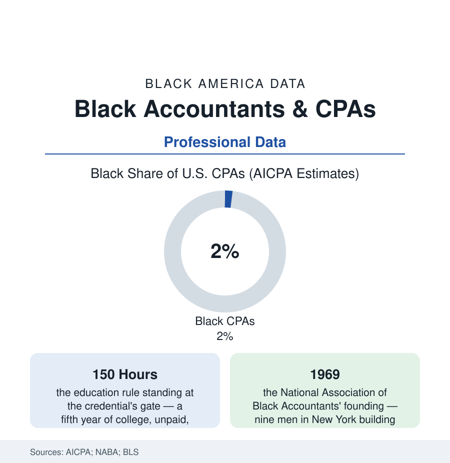

Black Employment
Black Accountants: Inside the Profession With the Two-Percent Problem
Accounting is America's language of money, and its credentialed ranks are about two percent Black — a figure so famous it has a name inside the profession. The CPA file.

Every other number in this atlas passes, at some point, through the hands of an accountant — and the hands are about two percent Black. The CPA's two-percent figure is famous inside the profession itself, quoted in its own journals as a standing embarrassment across decades of initiatives. This article reads the accounting file: a small number with a long, well-documented anatomy.
The Pipeline's Four Leaks
The profession's own research has mapped the losses with unusual honesty, and they occur at four consecutive gates: the exposure gate (the high-school student of the education file who never meets an accountant — the profession invisible in the career data of the neighborhoods where it doesn't recruit, the student who pictures a tax-season storefront rather than a partnership track), the curriculum gate (the accounting major itself, whose Black enrollment in the university data runs well ahead of the credential — the students present, the leaks downstream), the 150-hour gate (the profession's fifth-year education requirement, unique among the major professions in demanding a full extra year of tuition — typically unfinanced and un-salaried — between the degree and full licensure; the cost-benefit arithmetic of that year, against the starting salaries, doing its quiet sorting by family wealth in the pipeline studies, and the state-level reform movement of the recent sessions — alternative experience pathways to the same license — naming the rule itself as a barrier in statute after statute), and the examination-and-hiring gates behind it (the CPA exam's pass-rate differentials in the boards' data, the Big Four and national firms' campus hiring funnels, the partnership census at the corridor's end — the two percent thinning to the partners' rows, where the profession's own count finds Black partners at around one percent of the total, the client-facing summit of the audit world effectively a closed room across a half-century of the firm's diversity reports).
The profession's Black history is a study in credentialing as a locked door with the key inside: the first Black CPA, John Wesley Cromwell Jr., licensed in 1921, had to find his way to a state whose experience requirement could be satisfied without a white firm's sponsorship — the rule requiring supervised experience under a CPA, in a profession that employed almost none he could apprentice to. The count then grew by ones and twos for decades: the profession's own centenary histories tally fewer than a hundred Black CPAs by mid-century, a number that includes Mary T. Washington of Chicago — the first Black woman CPA, licensed in 1943, whose firm on the South Side became the pipeline's prototype, training scores of the accountants the big firms wouldn't, in an office above the very community its audits served. The two-percent present stands on that arithmetic: a profession whose licensing machinery was calibrated, for its first half-century, to keep the count near zero — and whose machinery, the reformers of the current debate argue in the language of hours and pathways, has never been fully recalibrated since.
The Counter-Institutions
Against the gates stand the profession's Black-built instruments, and their history is the file's spine: the National Association of Black Accountants, founded in 1969 by nine men the firms had mostly declined to hire, grown into the pipeline's central machine (the campus chapters, the accounting-careers camps for high-schoolers, the scholarship and exam-prep funds aimed precisely at the 150-hour gate's toll), and beside it the Black firms' own lineage — the historic practices of the business file (the firms that audited Black America's banks, insurers, and municipalities when the white firms wouldn't take the engagements, their surviving successors now joined by a new generation of Black-owned firms winning public-sector and corporate audit work in the supplier-diversity data). The demand side has its own momentum in the corporate data: the audit-committee era's appetite for diverse firms, the government contracting file's set-asides for the municipal audits, the ESG-era reporting industry inventing whole new accountings to be done. And the demographic math beneath the profession is quietly urgent in the BLS projections — accountants and auditors among the largest professional occupations in the economy, its retirement wave opening hundreds of thousands of seats in a decade; the question the AICPA's own reports pose is whether the two percent is the profession's past or its decision. The students in the pipeline answer in the enrollment data first: Black accounting graduates have grown faster than the credential for years — the reservoir behind the gates is built. What remains is the gates.
Reading the CPA Data
Two percent of the profession that counts everything else: the number is a summary of exposures, costs, and doors in a single digit — and a standing invitation, renewed by every retiring partner class, to rebuild the count. The AICPA publishes it without flinching, to its credit. The flinching, the file suggests, should be aimed at the gates.
More in Black Employment
The Black Unemployment Rate: The Two-to-One Pattern
Black unemployment runs at roughly twice the White rate — 5.5 percent against 3.3 percent in annual averages — a ratio stable across five decades of federal data. How it is measured and why it persists.
Black Median Weekly Earnings: The 80-Cent Ratio
Black full-time workers earn a median of about $900 a week — roughly 80 cents for every dollar White workers earn. The BLS earnings data by group, gender, and occupation.
Black Labor Force Participation: Working at National Rates
Black labor force participation runs at roughly the national rate — and Black women participate at higher rates than White women. The BLS participation data.
Source: American Institute of CPAs Trends reports; National Association of Black Accountants; U.S. Bureau of Labor Statistics; National Association of State Boards of Accountancy data.